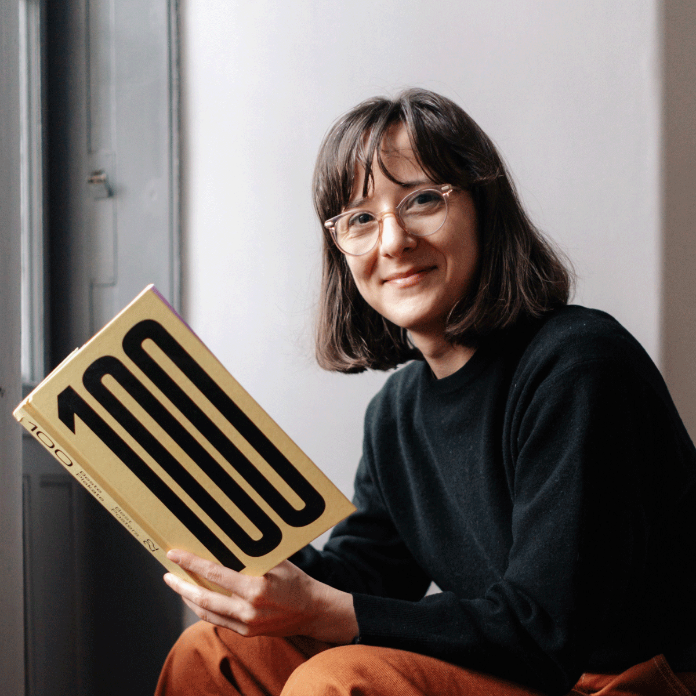

Designer and Webflow developer.
Half engineer, half designer. This mix is where solutions come from that work well and look good too. I look for simplicity, for things that actually connect, because real change starts with real experience. My favorite projects are the ones that solve something that matters, not just something that looks nice.
Outside of work, I trade the screen for the outdoors – swimming, hiking, analog camera slung over my shoulder, chasing inspiration in nature and new cultures. No delete button out there, which I think is part of the appeal.
Back home, I get lost in baking: measuring, mixing, waiting for something to rise. Something about starting with a few simple ingredients and ending with a treat feels like the best kind of problem-solving
Client: Procivis AG
03/2026 - today
BOLD. Branding Studio
03/2019 - 07/2026
Webflow
(Webflow Expert Certificate
)
HTML, CSS, Javascript
Figma
Photoshop, Illustrator, InDesign, Lightroom
03/2026 - present
CAS UX/UI Design, Zürich University of the Arts, Switzerland
10/2018 - 07/2021
BA, University of Arts and Design in Cluj-Napoca, Romania
Thesis: Visual identity for Miercurea Ciuc
10/2013 - 07/2017
BSc, Technical University of Cluj-Napoca, Romania
Thesis: Painting classification in Art Movements based on Image Features
10/2015 - 02/2016
Cracow University of Technology, Poland
Erasmus internship
native Hungarian
professional working English (C1)
professional working Romanian (C1)
intermediate German (B2)
(Goethe Zertifikat B2
)
elementary French (A2)